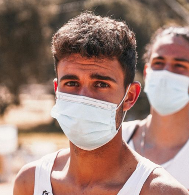
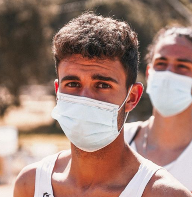

Welcome to Rustic Runners!

Rustic Runners – your go-to blog for everything trail running!
Whether you're a seasoned trail runner or just lacing up your shoes
for the first time, Rustic Runners is here to inspire and guide you
through the rugged beauty of off-road running.
Join our community of passionate runners as we explore scenic
trails, share training tips, review gear, and offer insights into
the unique challenges and joys of trail running. From dense forests
and rocky mountains to serene meadows and winding rivers, Rustic
Runners celebrates the thrill of adventure and the tranquility of
nature.
Get ready to leave the pavement behind and embrace the path less
traveled. Welcome to the wild world of Rustic Runners – where every
trail tells a story!
Posts
 
